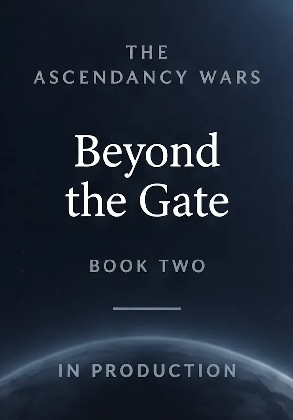

A Father's Love
First Quarter Daily Reflection
Learn MoreWilliam Hoffman Books
From Scripture-centered reflections to military science fiction, William G. Hoffman's books explore faith, courage, discovery, and the choices that shape our lives.
Stories of Faith
Three 90-day devotional journeys through Scripture.
First Quarter Daily Reflection
Learn MoreReflections from the Gospel of John
Learn MoreReflections from the Book of Acts
Learn MoreStories of Courage
Military science fiction set among distant worlds, ancient technology, and the struggle for humanity's future.
Book One
A fast-paced military science-fiction adventure where every decision could change the future of mankind.
Learn More
Book Two — In Production
The next chapter in The Ascendancy Wars is currently in production.